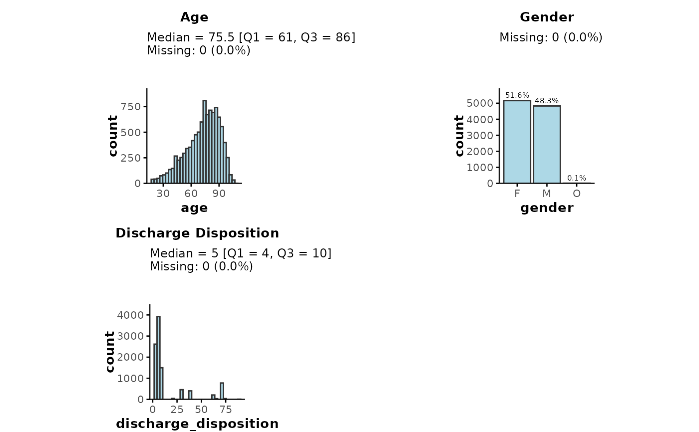

Plot descriptive summary statistics of multiple variables
plot_summary.RdThis function plots distributions (histograms/barplots) and shows basic summary statistics (e.g., median [Q1, Q3], % missing etc.) for multiple variables.
Usage
plot_summary(
data,
plot_vars = NULL,
facet_group = NULL,
show_stats = TRUE,
prct = FALSE,
base_size = NULL,
color = "lightblue",
...
)Arguments
- data
(
data.frame|data.table)
Table containing data to be plotted.- plot_vars
(
character|list)
Character vector or list of variables to be plotted. If noplot_varsinput is provided, the function will automatically plot all variables, ignoring any encounter/patient/physician IDs and date-time variables.- facet_group
(
character)
Name of variable to be used as facet variable. This only works ifplot_varsonly specifies 1 variable to be plotted. Users can then create separate subplots perfacet_grouplevel, for example, to plot separate histograms/ barplots for each hospital (facet_group = "hospital_num")/- show_stats
(
logical)
Flag indicating whether to show descriptive stats above each plot.- prct
(
logical)
Flag indicating whether y-axis labels should show percentage (%). IfFALSE(default), counts (n) will be shown.- base_size
(
numeric)
Numeric input defining the base font size (in pts) for each subplot. By default, the function will automatically determine an appropriate size depending on the number of subplots (base_size = 11if a single subplot).- color
(
character)
Plotting color used for "fill". Default is R's built-in"lightblue".- ...
Additional arguments passed toggpubr::ggarrange()that allow for finer control of subplot arrangement (e.g.,ncol,nrow,widths,heights,alignetc.; see? ggarrangefor more details).
Value
(ggplot)
A ggplot figure with subplots showing histograms/
barplots for all variables specified in plot_vars.
Note
These plots are not meant as publication-ready figures. Instead, the goal of this function is to provide a quick and easy means to visually inspect the data and obtain information about distributional properties of a wide range of variables, requiring just a single line of code.
Additional inputs when providing plot_vars as a list
When plot_vars are provided as a list, users can specify additional
characteristics for each individual variable, such as:
class(character): variable type, e.g.,"numeric","character","logical"etc.sort(character): for categorical variables, whether to sort bars in ascending ("^a") or descending (starting with"^d") frequencybinwidth/bins/breaks: for numeric/integer variables, specifying the histogram binsnormal: for numeric/integer variables, whether to assume normal distribution (will show mean [SD] ifshow_stats = TRUE)
Examples
# simulate GEMINI data table
admdad <- dummy_ipadmdad(
n = 10000,
n_hospitals = 20,
time_period = c(2015, 2022)
)
## Providing plot_vars as a character vector
plot_summary(
data = admdad,
plot_vars = c("age", "gender", "discharge_disposition")
)
#> `stat_bin()` using `bins = 30`. Pick better value with `binwidth`.
#> `stat_bin()` using `bins = 30`. Pick better value with `binwidth`.
#> `stat_bin()` using `bins = 30`. Pick better value with `binwidth`.
#> `stat_bin()` using `bins = 30`. Pick better value with `binwidth`.

## Providing plot_vars as a list input
plot_summary(
admdad,
plot_vars = list(
`Discharge disposition` = list(
plot_var = "discharge_disposition",
class = "character",
sort = "desc"
),
`# Days in ALC` = list(
plot_var = "number_of_alc_days",
binwidth = 1,
breaks = seq(0, 7, 1)
)
)
)